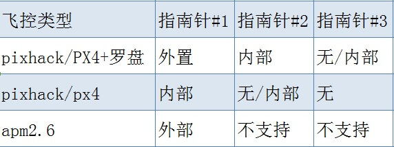
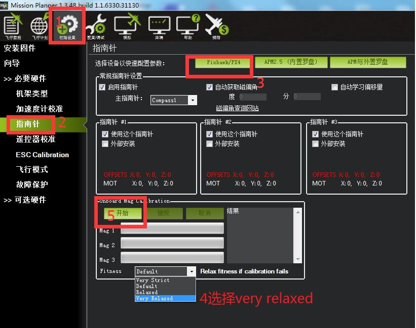
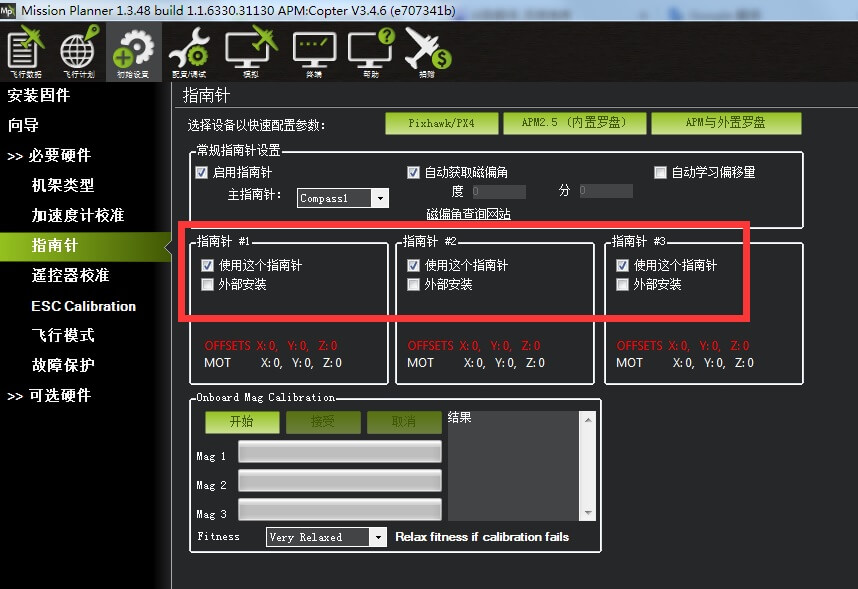
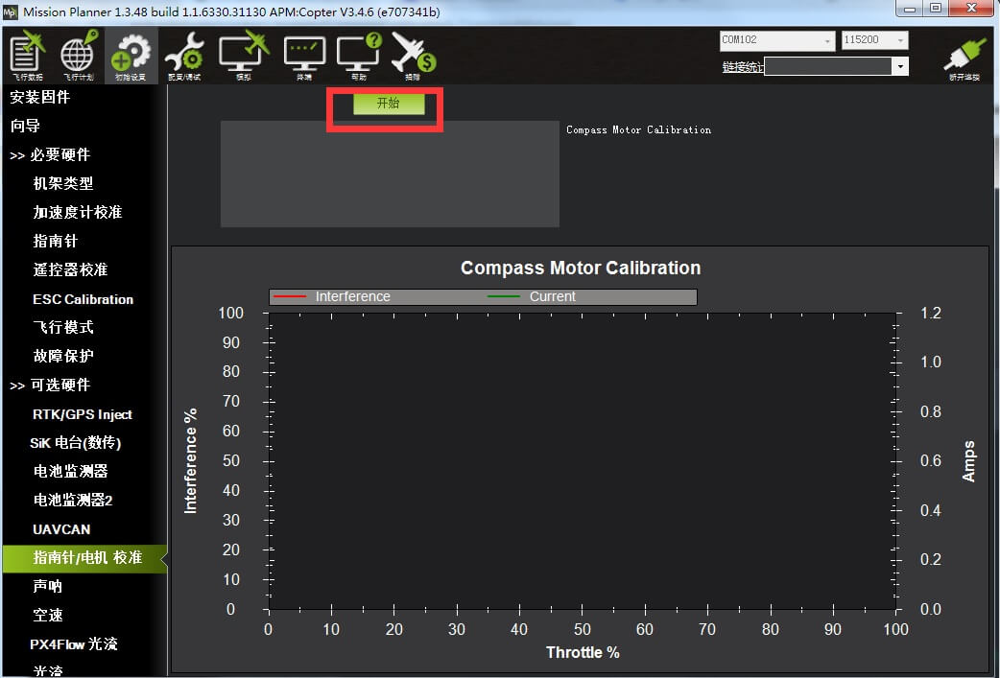

高级指南针设置
本文提供有关如何设置和校准罗盘（磁力计）的高级指导。
选择3DR UBlox GPS +指南针模块（推荐）并根据指定的说明进行安装的用户通常可以执行简单的“实时校准”，如“罗盘校准页面”中的指南针校准中所述）。
本主题提供了更完整的罗盘校准概述。 如果罗盘以非标准方向安装或需要额外的校准支持，这将非常有用。
概述
准确设置罗盘是至关重要的，因为它是航向信息的主要来源。 没有准确的航向，在自动驾驶模式（即AUTO，LOITER，PosHold，RTL等）中，车辆将不会以正确的方向移动。 这可能导致盘旋（也称为“马桶效应”）或失控炸机。
ArduPilot目前支持使用三个罗盘。 只有一个罗盘（使用COMPASS_PRIMARY参数指定，默认罗盘#1为主罗盘）用于导航。 虽然许多自动驾驶仪具有内部指南针，但大多数将使用外部指南针。 由于与其他电子设备的分离，采集的数据比内部罗盘提供的数据更可靠。
主要自动驾驶仪板的标准配置如下表所示：

设置配置
AC3.4以上固件下支持板载磁校准，如果配合使用1.3.46以上版本的地面站地面站自动屏蔽现场校准界面，强制执行板载磁校准，根据有关资料及实测显示板载磁校准比现场校准更为可靠，下面介绍一下板载磁校准：

快速配置
地面站支持自动配置最常见的自动驾驶仪板的所有参数。 所以您需要选择与您的自动驾驶仪对应的按钮：
对于Pixhawk和PX4，选择Pixhawk / PX4按钮。 可能会提示您输入特定的ArduPilot版本。
对于APM 2.6，使用外部指南针选择APM。
对于APM 2.5，选择APM（内部指南针）。
如果外部指南针处于非标准方向，则必须手动选择组合框中的方向（从ROTATION_NONE更改）。 外部罗盘COMPASS_ORIENT选项与AHRS_ORIENTATION参数方向选项无关。
大多客户FITNESS选项可选very Relaxed,这样校准比较容易通过。
检查指南针方位
AHRS_ORIENT参数的正确，可以确保您的内置罗盘的方位正确。
通过旋转您的飞机所有的轴，每个罗盘沿相同的方向移动，应该是大致相同的值
北半球： - 指南针向上放置Z轴应为正 - 当自动驾驶仪下降时，X轴数值应变大 - 当自动驾驶仪右转时，Y轴数值应变大。
南半球：指南针向上放置Z轴应为负 - 当自动驾驶仪下降时，X轴数值应减小 - 当自动驾驶仪右转时，Y轴数值应减小。
常规设置
一般设置适用于连接到自动驾驶仪控制器的所有指南针：
启用罗盘：确定是否启用（任何）罗盘。如果启用，如果启用，飞行控制器将使用主罗盘作为航向数据，否则航向将从GPS估算。启用此复选框对应的设置参数为MAG_ENABLE = 1
主指南针：指定ArduPilot用于导航的罗盘（只有一个罗盘用于导航）。一般默认为第一个罗盘（“Compass1”）。此选择列表对应参数COMPASS_PRIMARY，可设置为从0到2（即是在界面中标记为1到3，罗盘顺序也是从0开始）。
自动获取偏角：根据GPS锁定后的查找表设置偏角。用户可以修改这个偏角;在去掉复选框中的勾（COMPASS_AUTODEC = 0）后，可以在COMPASS_DEC中手动输入偏角。

指南针特定设置
在指南针校准界面可选择任意罗盘组合使用
- 使用这个罗盘。在这个复选框中勾选指南针即使用该指南针，禁用即不勾选，复选框对应的参数为compass _usex参数(x是0-2）。
- 外部安装的罗盘。用于设置是否是一个外部安装的罗盘，外部安装对应参数compass_external=1.如果是内部罗盘方向对应AHRS__ORIENTATION.如果是外部罗盘可能与飞控内部罗盘航向不同。
- 指南针方向：设置外部罗盘安装方向，保存为COMPASS_ORIENTx参数的值。
OFFSETS（COMPASS_OFFSx）和MOT（COMPASS_MOT）参数由实时校准和CompasMot程序填充（参见下面的校准部分）。
CompassMot - 补偿来自电源线，ESC和电机的干扰
对于只有内部罗盘以及电机电源线对罗盘存在严重干扰的飞控，推荐使用。首先需要有电池电流监视器，因为磁力干扰与电流有线性关系，CompassMot才能正常工作。在技术上可以使用油门设置CompassMot，但不建议这样做。
请按照以下说明操作：
启用电压电流计
把螺旋桨反装，这样即使油门升高时，由于浆产生向下压的压力让飞机飞不起来。
固定好飞机，使其不移动
打开遥控器
连接电池给飞控供电
使用usb线连接电脑地面站
如果使用AC3.2：
打开初始设置|可选硬件|指南针/马达Calib界面
按开始按钮
你应该听到你的哔哔两声
将油门缓慢升至50％〜75％（飞机将旋转！）5〜10秒
快速将油门回到零
按完成按钮（AC3.2）完成校准
检查显示的干扰百分比。 如果小于30％，则您的罗盘干扰是可以接受的，您应该看到良好的Loiter，RTL和AUTO性能， 如果高于30％，应该尝试将APM / PX进一步向上远离干扰源，或考虑购买外部指南针（或GPS +罗盘模块）。
指南针错误警报
Compass Health：在半秒内指南针没有发送至少一个信号。
Compass Variance：卡尔曼滤波器检测不合格，多个罗盘同轴差值过大(x轴差值大于100，y轴差值大于100，或z轴反向）。
Compass Not Calibrated：指南针未校准。
Compass Offsets High：你的一个指南针偏移量超过600, 指示可能磁干扰，检查的来源 干扰和再次校准。